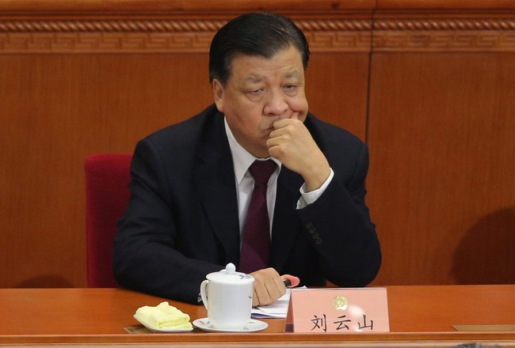
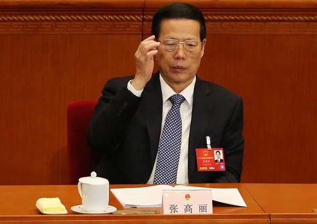
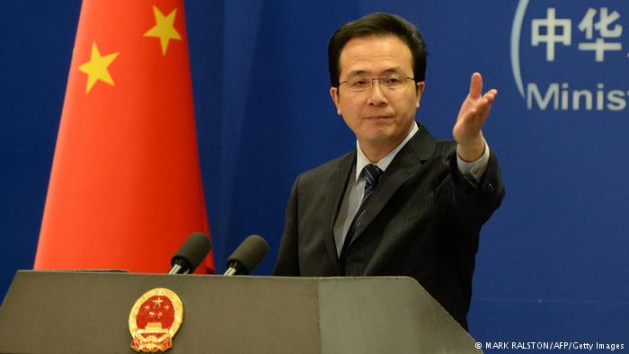

★背景介绍
照例先聊一下此事的背景。
◇何为【离岸公司】？
关于离岸公司的作用，可以参考 BBC 下面的这篇报道。
巴拿马文件——揭开隐藏资产及逃税黑幕 @ BBC/英国广播公司
已经有人写了一个漫画版的解释（如下图）
假设说你把自己的零钱存在衣柜架上的储蓄罐里。
但你妈妈总是动不动就来检查存取情况。你很不爽。
然后你准备了另一个储蓄罐…
…带到强尼家。
强尼妈妈很忙，没空来检查。所以你能够把储蓄罐秘密地藏在那里，没人会来过问。
小区里的其他小朋友都觉得这个主意很棒。
所以他们也都把自己的储蓄罐藏到了强尼的衣柜里。
但有一天，强尼妈妈发现了这些储蓄罐。
她很生气，打电话给所有小朋友的家长，告诉他们这些孩子背着家长偷偷藏钱。
今天的文件泄露事件基本就是这么回事。很多重要的、有权势的人物都把自己的储蓄罐藏在了强尼在巴拿马的家。

◇此次泄密的数据量
此次事件泄露的信息量大约 2.6 TB（2600 GB）
与之对比，
2010年的“电报门泄密事件”——1.7 GB
2013年的“离岸金融解密事件”——260 GB
2014年的“卢森堡解密事件”——4 GB
2015年的“瑞士银行解密事件”——3.3 GB
下面是数据量的对比图
巴拿马文件共包含了1150万个文件，这些文件中有电子邮件，有各种复印件/影印件，还有 Mossack Fonseca 律师事务所自己编写的摘要文件。
下面是此次泄露的数据中，各类文件格式的对比图。
◇此次事件的主角——Mossack Fonseca 律师事务所
此次爆料的数据全部来自这家律师事务所。该公司注册在巴拿马，长期以来一直默默无闻。几十年来，它替全世界最重要人物和公司办理离岸避税之类的业务。
这家律所在全球三十多个地点设立了办公室，单单在中国就有8个办事处。
◇Mossack Fonseca 的客户都是哪些人？
根据解密的文件，Mossack Fonseca 的客户大约1万5千人，遍及全世界200多个国家和地区。其中已经发现有 143 个政治家通过自己的朋友或家人开设离岸公司，以此来隐藏自己的巨额财富。
随着数据的进一步挖掘，将来或许会有更多的政坛人物浮出水面。
★外媒的评论文章
《“巴拿马文件”泄密，多国政要隐秘资产曝光 @ 纽约时报》
《中国大陆和香港是“巴拿马文件”的主要客户 @ 德国之声》
“巴拿马文件”的主角——莫萨克·冯赛卡律所在中国大陆和香港揽有大宗生意。该律师事务所近三分之一的客户来源以上两地。
......
记者的调查显示，莫萨克·冯赛卡律所在中国大陆和香港的8个城市拥有分所，这一数量超过其他任何一个国家。在中国大陆，该所主要在上海、深圳、青岛、大连、杭州、济南、宁波等地展开活动。
《九位中共领导人亲属涉入“避税港” @ VOA/美国之音》
《专访调查记者：望巴拿马文件成为王岐山反腐重要线索 @ VOA/美国之音》
《巴拿马文件再撼中共高层：刘云山张高丽家人上榜 @ 纽约时报》
负责宣传工作的常委刘云山——他的儿媳是一家在英属维尔京群岛注册的公司的股东和董事。

担任副总理的常委张高丽——他的女婿是三家在英属维尔京群岛注册的公司的股东。

《更多中共政治局常委亲属涉“避税天堂” @ VOA/美国之音》
《剥茧抽丝见巨资——避税港内的中国红色贵族 @ VOA/美国之音》
《中国权贵设离岸公司隐藏巨额财富 @ 纽约时报》
（编程随想注：这篇报道写于2014年，那年发生了“离岸金融解密”事件，具体详情参见俺另一篇博文《习包子露馅——习近平在内的权贵家族如何转移巨额海外资产》）
《权贵家族上榜，中国封锁“巴拿马文件”相关报道 @ 纽约时报》
《章文：你看你看 都在「離岸」 @ 東網》
说到“离岸”，不能不提到之前流行的“弃船说”：中国好比一艘大船，本来同船人应该同舟共济，但其中有些人悄悄为自己预备了快艇，好在沉船之前开溜。有条件准备快艇的不会是一般的水手，只能是水手的上级——大副甚至船长。
前些年媒体报道的“裸官现象”就是“弃船说”的现实演绎版：老婆、孩子，还有大量不义之财都送到国外，自己一个人留在中国当官。其实不仅是处长、局长如此，部长以及政治局委员、乃至常委级别的都一样，或者可以这样说，“上梁不正下梁歪”，小干部是跟大干部学样的，你大腐败我小腐败，你把妻儿送到哪里，我也把妻儿送到哪里。
前国家领导的儿孙辈在海外生活的消息屡见境外报端：亿元豪宅住着，世界名校读着，“公子”“名媛”流转于各种上流社交场合，人生好不得意！
退休后的官员打个飞的去和妻儿会合，在气候宜人、食品安全的他国颐养天年。今年2月境外媒体报道离退休干部为领取养老金挤爆中国驻加拿大多伦多总领事馆，结果导致现场异常混乱，被维持秩序的加国警察叫停。图文并茂的消息让国人惊呼：究竟有多少离退休干部生活在国外？
《“巴拿马文件”折射出隐藏资金的难度越来越大 @ WSJ/华尔街日报》
《谁公开了巴拿马文件？揭秘调查记者团队 @ 纽约时报》
★网友热议“离岸的权贵”
青蒜腊肉：
巴拿马文件新出炉的名单，五毛狗看清楚了。
Elliot_Hao：#巴拿馬#
滕彪：
#巴拿马文件 他们在那边偷漏巨额税款，我们在这里依他们的法缴税。。。。
我想这样表达，可能引起较多共鸣。太少人明白巴拿马跟自己关系。 #panamapapers
曹长青：
（纽约时报）温家宝任总理期间，其家族资产累计到27亿美元（160多亿人民币）！
纽约时报从中国工商部门拿到了温母的股票拥有名册，上面有其原始投资五千万人民币的明细，有温母的印章、身份证号码等。
温家宝家族的资产如按美元比，是和珅的3.5倍！如按人民币，是清朝大贪官的20倍！
周锋锁：
不面对（巴拿马文件）这个事情，所谓的反腐都是谎言。（中共）他们采取诡异的方式来对待，包括为习近平辩护的文章在国内迅速被撤下来。
中共官员靠汲取民脂民膏得来的财富是一个巨大的黑洞。
我们重申89年的诉求，89年学生的要求很清楚，就是两条：一个是公布官员财产，一个是新闻自由。
av69：
姐夫，基本离岸。妻儿，基本移民。自己，基本绿卡...
吸干最后一滴血，榨干最后一滴油。然后，带着二奶三奶，带着金山银山，挥一挥衣袖，不带走一片雾霾。
He Qinglian：
《巴拿马文件》与《中国离岸金融解密》之异同
2014年报告主攻中国；2016年巴拿马文件涉及的权贵遍及世界，说明隐匿资产避税是权贵富人钟爱的洗钱方式，无分政治体制与国别。
但如何面对这份报告则体现了体制差异。
http://www.voachinese.com/content/he-qinglian-blog-panama-papers-china-relations-20160404/3269582.html
He Qinglian：
冰岛总理在压力下辞职，但离岸公司开办最多的中国却纹风未动。巴拿马文件爆料，中国有至少8个历任常委、国家领导人的亲属涉入其中。
莫萨克·冯赛卡这个法律服务公司开办事务所最多的地方是在中国，其网站显示：它在中国的8个城市设立办事机构。
何岸泉：
巴拿马文件披露后我想了很多。昨天得出一个结论是：中国没有赵家人，只有跑路人。
今天中国社会各阶层分类的话，可以分，早跑晚跑的人，能跑不能跑的人。
青蒜腊肉：
巴拿马文件#panamapapers 又有新公布，中国几乎所有高级官员都有份。
怪不得要“五不搞，七不讲”，怪不得不准公布官员财产。
共产党已经从根烂掉，善良的中国老百姓还信你们吗？五毛狗还要卫护你们吗？
东先生:
对于震惊全球的 #巴拿马文件 ，中国媒体集体噤声，目前为止收集资料最齐全的，是一家架设于境外的成人网站——草榴社区，不愧“中文社区最后的良心”。
http://t66y.com/htm_data/7/1604/1895323.html
我是你认识的王小能：
发展的代价人民扛了，发展的成果都离岸了。
笑都笑不出来。
Hu Ping胡平：
【如山罪行中的一小抔土】
和中共暴力剥夺国民私产以及用公款养党这两件事相比，藏在境外公司里的巨额赃款，只是其如山罪行中的一小抔土而已。
http://www.rfa.org/mandarin/pinglun/huping/hp-04052016151858.html
香港蘋果日報：
呢鑊你仲唔...〈#巴拿馬洩密〉
【習近平家族及成龍等人 用避稅天堂交易文件大規模外洩】
http://bit.ly/1MMkoQM
hnjhj：
人民公仆藏点钱也不容易，首先要有个信得过的亲戚，还得找个靠谱的巴拿马律师，帮你在遥远的大西洋上建个离岸空壳公司，然后才敢把钱搬到瑞士。
帥哥大雷雷：
不得不承认，在赵国捞钱、在香港花钱、在巴拿马洗钱、在瑞士存钱，是目前人类能够找到的最理想生活方式。
majunlive：
大家都知道世界上所有国家都是被骗子盗贼和抢劫犯统治着。
巴拿马文件提供了一些证据，在民主的国家这些骗子可能会受到法律制裁，在诸如中国俄罗斯这些流氓国家骗子会把称他们为骗子的人抓起来
北风（温云超, Yunchao Wen）：
对于年轻力壮的骆驼，背上爬多一两个人都不会太当回事；但对于一头病骆驼来说，加多一根稻草都可能不堪重负。
同样是 #姐夫 的事情被揭露，三年前与三年后作用显然大不一样。 #巴拿马文件
封神祭二十二叔：
网友感慨：反腐抓了那么多贪官，怎么物价还疯狂上涨。钱哪里去了？
我笑着回答：巴拿马！
（某不知名网友）：
所谓“共产主义”，就是把国家财产，共进了自己的腰包。
（某不知名网友）：
“共产”的真谛是什么？
老百姓的血汗钱，被土共权贵随意掠夺贪污，按需分配。
它们，已提前进入了它们的“共产主义社会”。
它们的共同祖宗，叫做马克思。
jws：
这就是为什麽中共官员不敢公布家属财产， 原来这些“无产阶级革命家”是这样搞革命的。
（某不知名网友）：
上次离岸公司解密你们说是政治对手陷害，这次曝光了72国包括许多民主国家的政要，你们还有何话说？
涉案的中共政局常委，赶紧下台吧！还有何×脸赖在那个位置上？
现在主动下台算自首，否则有朝一日被人民推翻直接上断头台！
ref_undef：
我有个朋友就是帮月月鸟洗钱的，这个朋友跟我一样大，现在全家都财务自由了，每次出来吃饭都主动请客，称为“取之于民用之于民”。
周周煮粥：
到底是 #離岸姐夫 還是 #姐夫離岸 ？
#巴拿馬 律師事務所真不是東西，竟然把 #巴拿馬文件 給洩露了，這算不算侵犯客戶權益？
丫可以組成 #全球“巴拿馬文件”受害苦主聯合維權委員會
公民-平子哥：
赵國圖片 #巴拿馬
Clyde McCain：
The #PanamaPapers explained in one image.
老杨：
九位领导人亲属进入避税天堂，领导人本人啥时候进入天堂？
（某不知名网友）：
“姐夫”和“公主”
★关于“摸着石头过河”
高晓亮：
【终于知道哪条河了！】
“摸着石头过河” ，这是洋务运动总设计师邓某人的名言！
几十年来，国人一直不知道摸着石头要过哪条河？
这几天，世界哗然，“姐夫”已经摸着石头过河了。
国人终于明白，原来要过的河——巴拿马运河……
陈闯创：
这张图可能是港人p的，虽然人物没选准(江泽民家族公认富可敌国，但离岸和巴拿马两次泄密都尚未查到和江家有关，不过胡锦涛的侄子却查出有离岸公司)，但意思是妙的。
转贴此图的葛永喜律师因此成为已知广东第二起涉及巴拿马文件被抓者。
xiaoming：
必须推此图一把，维护葛律师言论出版自由，抗议习掩盖姐夫海外藏赃恶行。
RT@bowenpress 葛永喜律师涉传播巴拿马文件图片被抓事件…传唤通知曝光 上书“公然侮辱他人”
http://bowenpress.com/news/bowen_83014.html
北风（温云超, Yunchao Wen）：
great China story：
三个自信，一带一路，党媒姓党，中国梦，伟大复兴，保护文物，摸石头过巴拿马运河。
图书管理员
改革确实进了深水区，不离岸都摸不着石头了。
基德酱：
某些姐夫过河，摸着摸着石头就离了岸。
★关于“姐夫”
（编程随想注：“姐夫”一词在前几天已经进入“热搜榜”的 TOP 10）
老卡:
“姐夫”神勇一路高歌杀进【前五】了，大家有机会一起见证“姐夫”被敏感词的光辉一刻。#姐夫

继【赵家】流行之后，【姐夫】一词又要大流行啦。
谁不希望有个离岸的姐夫？
shenyichun：
“姐夫”上了兲朝微博热搜榜，网友调侃说：姐夫很有钱，媳妇儿很会唱歌。
蓝色风：
邓小平说：让一部分人先富起来
习近平说：让一部分人先离岸，比如姐夫
需要鸡血的菜菜子：
#姐夫# 哎，作为一只老虎，你造我有多么认真在演武松嘛？
北风（温云超, Yunchao Wen）：
习近平再跟人讲反腐败的时候，大概会在每一个人的额头上看到 #姐夫 两字。
当他一本正经和别人讨论问题的时候，他肯定能分明感受到对方在耻笑他。
最难堪的事情莫过于此。 #巴拿马文件
hnjhj：
现在的小朋友对于复杂的姻亲关系和称谓已经比较陌生了。
这么说吧，烧卖是包子的姐夫，包子是烧卖的小舅子，也称内弟。
包子和烧卖之间是郎舅关系。不叫小叔，也不是连襟、担挑……
由于事关国本，不要搞错。
Suyutong：
姐夫，亲亲的姐夫。请你藏好我的金子，照顾好我的亲戚，潇洒在防火墙之外。
我会用404保卫你。╭∩╮
青蒜腊肉：
因为巴拿马文件#PanamaPapers的曝光，姐夫邓家贵这回在全世界范围出名了。
习近平以前被人叫成“习禁评”，现在估计习近平又多了一个家喻户晓的花名—“吸金瓶”了，这样才配得上巴拿马文件中离岸银行的档次。
赵家五毛狗们也都与有荣焉。有离岸姐夫就是不一样！牛B！
王江松：
【好湿】
姐夫乘舟將欲行，忽聞岸上洗錢聲。
巴拿馬河深千尺，不及舅子送我情。
陳潁泰：
小時候，#巴拿馬 是一條寬寬的運河，
太平洋在這頭，大西洋在那頭。
長大後，巴拿馬是一個獨立的國家，
哥倫比亞在這頭，哥斯達黎加在那頭。
後來啊，巴拿馬是一道長長的地峽，
北美洲在這頭，南美洲在那頭。
而現在，#巴拿馬 是一堆泄漏的 #文件，
#姐夫 在這頭，小舅子在那頭。
（编程随想注：
关于“姐夫”的问题在知乎也成为热门话题，引来大量隐晦的讥讽和吐槽，不久就被知乎网管删除）
问题：
姐夫做了不好的事，我该怎么办？
姐夫以前做了些不好的事，然后因为其他原因被牵扯出来了，我该怎么办？
答主：啮齿类动物杀手
你就直说吧，你是不是姓习？
答主：孙陆天
媛水救不了近火
答主：匿名用户
“军委的同志身居高位，全军官兵在看着我们，广大的人民群众在看着我们。为人是否正派？做事是否干净？这是事关党和军队形象的大问题。……
只有给全军作出表率了，我们抓全军作风建设才有底气。自己不..”
答主：立青
这。是。一。道。送。命。题，叫《姐夫别慌》，过几天新闻热点就转移了。
等一下，有人敲门，我先去拿下快递。
答主：欧阳星
参考两个套路：
1、一派胡言，给我的家庭泼脏水。
2、无中生有的事你说出来等于你也有责任。
答主：狗大王
字里行间充满江胡习气
苏州郎心铁：
只许姐夫离岸，不许百姓入关。
颜_佩剑：
【中国好姐夫】
Suyutong：
#巴拿马文件 对我来说记住了一件事：小舅子装着打虎，姐夫忙着洗钱。
小舅子的另一盟友普京比他更直接；至于舔菊者成龙，早已深谙并学习了习的精髓精神。
东先生：
#巴拿马文件 这事，#姐夫 有望晋升敏感词。
还有，以后可以不用包帝代指今上，俗，用 #小舅子 多亲切。
letscorp：
【明末微型历史情景剧：天子守国门】
崇祯：吾非亡国之君，汝皆亡国之臣。吾待士亦不薄，今日至此，群臣何无一人相从？
众臣工：坊间皆曰陛下不发内帑犒军，而谕国舅输金银丝帛于红毛离岸处，今有巴拿马纸为证。
szeyan1220：
跟著姐夫，早日實現中國夢！
saispass：
这届人民不行，光盯着人家姐夫。
wentommy：
有些俄罗斯政治家真讲究，给自己起名叫“没得喂姐夫”。
缤纷岁月：
去相亲，
女方家长：你有房吗？
男：没有。
女方家长：你有车吗？
男：没有。
女方家长：什么都没有就给我滚！
男：我在海外有个姐夫。
女方家长：孩子，外面风大,我们屋里说话！
★关于“李公主”
周锋锁 Fengsuo Zhou：
国际调查记者联会刚刚公布了最新的巴拿马离岸账户调查。其中包括六四屠夫李鹏女儿李晓琳，习近平姐夫邓家贵。
李晓琳使用香港护照，名字为刘李晓琳，Xiaolin Liu-Li
冠夫姓，可能因此掩盖了和李鹏的关系. #china #太子党
陈闯创：
新近泄露的巴拿马律师楼文件包含有李鹏之女李小琳、习近平姐夫邓家贵的资料。
一年前李小琳在瑞士的律师告诉巴拿马方面，Silo基金的最终受益人UBO是刘智源、刘李小琳夫妇，他俩住址是北京万寿路甲15号院109房 #PanamaPapers
贝格海德：
李小琳及其丈夫刘智源拥有某基金，某基金全资拥有某BVI公司，该BVI公司系李父担任中国总理期间注册成立。
夫妻二人的瑞士律师称这间BVI公司的资金来源系帮助其他客户从欧洲向中国出口重型机械的业务利润。
李的香港特区护照显示其姓名为“刘李小琳”，这使得把李与总理联系起来更加困难。

花自飘零-水自流：
初八叔叔：
道德姐坏事做得真多，今年两会无声无息，如同透明人似得，尾巴夹的不能说不紧。
原以为时间能够让群众们遗忘了她，求个安心退休养老，结果一个超级新闻又一脚把她踢出来咯……可怜呀可怜！
所以说人啊不能做坏事，哪怕再隐秘，终有暴露的那一天……
能力之外的资本等于零？鬼都不会信！
Isaac Mao：
#Panamapapers
topleftcorner：
在泄露的文件里，一堆堆的 son，son，son 和 son in law，son in law，brother in law 里，
李小琳作为唯一的一个 daughter，真是一股清流。。。 #豆瓣式反讽#
★又见真理部的河蟹
（编程随想注：各种与“巴拿马文件”沾边的词汇，在墙内都成了“敏感词”，下面列举新浪微博的搜索截图）

（以下是相关网友评论）
紫荆铿锵行：
【猪国梦：删无赦！】
flied16：
巴拿马文件这事，百度搜不到，新浪微博搜不到，微信不允许传播（文字图片都不行，ocr技术都上了），各大门户更是不可能报道，只有环球时报在那瞎说。
那这件事在国内传播范围能有多大？能有1kw人接触到这消息不？ #祖传新闻媒体管制手艺
贝带劲:
#巴拿马文件 微信也跟进屏蔽了，相关链接翻墙都打不开。部分截图尚存，来自非监控对象
MyDF：
目前为止，登载 #巴拿马文件 相关信息的所有网站都被墙了了，最新上榜的是：经济学人、卫报、《时代》周刊的官网，陆续被404。
你觉得，是应该追究墙的责任，还是追究巴拿马文件的责任，还是追究这些网站的责任？
（某不知名网友）：
面对巴拿马文件的两种态度，西方世界是严查，不遮不掩，媒体穷追猛打，逼得首相下马；中共是另一番景象，封锁，遮掩，不许议论。
中共官方说巴拿马文件是捕风捉影，而西方世界则按此文件披露的事实，进行核查追责。
两相对比哪个光明磊落，哪个阴暗鬼祟；哪个公众知情监督官员，哪个蒙蔽公众官员耍横，百姓一目了然。
真理勇敢的心3：
冰镇镇镇汽水儿：
本来还不信是真的。
感谢屏蔽和辟谣，彻底相信了这下
EQ_8023：
匿名用户，您好，您的提问「为什么姐夫去了趟巴拿马，小舅子却变的有钱了？」由于不符合知乎内容规范已被删除。
知乎不允许：不宜公开讨论的政治内容。如果您对本次处理结果有异议，请回复本条私信，我们会及时复查。
羊定志：
全球因为某某事件闹翻天，国内静悄悄
倦逸散人：
什么事件啊？我们都不知道~~~墙里的世界好幸福！
szshu：
最近封锁太狠了，墙内发消息只能用暗语——巴拉巴拉小魔仙文件，电影3650天。
Tunick：
大家不要慌，我们这不会受影响，中国梦还在
老罗的微博：
请不要继续传播巴拿马离岸故事了，万一老大生气了，新浪微博也许会打烊哦。
大脸猫1105：
各国贪官表示：十分想移民中国！不用辞职、不用解释，删帖就行。
CHYIBING：
今天之前，我一直以为巴拿文件泄密事件是愚人节玩笑，直到这个词条被百度屏蔽；
之前，我一直抱着看热闹的心态等着看西方国家的笑话，直到这条新闻被屏蔽……
Tom Phillips：
@TIME also seems to have been blocked in China after its Xi Jinping front page
★关于外交部的回应
任凭密件闹翻天 中国就当没看见 @ 德国之声
 法新社和路透社5日报道称，中国外交部当天下午举行例行记者会，洪磊被外国记者问及巴拿马文件时回答，“对于这种捕风捉影的东西，我们不作评论。”
......
据“中国数字时代”网站周二报道，政府网络管理部门为此下达了删贴通知。该网站援引某省网信办通知写道：查删已转载的巴拿马文件相关报道。相关内容一律不再跟进，任何网站一旦发现传播境外媒体攻击中国内容将做从重处理。本条指令口头传达到值班编辑，请立即落实。
巴拿马文件 陆外长王毅首做回应 @ 中时电子报
王毅8日针对记者的提问回应：中国反腐斗争正在继续进行当中，正像我们的领导人所说的，反腐永远在路上。至于你提到的一个所谓文件，我们看到巴拿马方面也在做出一些表白和澄清。恐怕我们首先要把它搞清楚到底是怎么回事。
xiucai1911：
【冰岛】总理辞职。
【阿根廷】总统被调查。
【印度】正在调查。
【英国】首相承认获利。
【新加坡】正在审查。
【奥地利】正在调查。
【加拿大】正在调查。
【俄罗斯】西方抹黑。
【巴基斯坦】前总理儿子自我辩护。
【中国】捕风捉影，不予评论
巡游老衲：
告诉你：我不傻，但我很会装傻。[嘻嘻][嘻嘻]
★关于“坏球时报”
缤纷岁月：
环球屎报可是真心忒牛逼。
Jian Alan Huang：
为小舅子洗地难度确实非常高，胡锡进尝试从阴谋论角度切入叼了第一盘，结果被一巴掌拍了个狗吃屎。
这两天又来一个从更高难度的国际惯例角度切入，结果还是适得其反，越描越黑。
原因很简单，姐夫的每笔钱都经得起查吗？经得起查就公布一下，让大家查嘛。
Jian Alan Huang：
我觉得胡锡进很快药丸。
第一时间号召大家快来欣赏“巴拿马文件”不说，还起了一个这么屌的标题：偷或编“巴拿马文件”者绝非等闲之辈。
翻译一下就是：把“巴拿马文件”偷出来编撰成册的人真呀真厉害。
莫之许：
胡锡进洗了一辈子的地，也没捞到需要离岸去洗的钱——这就是赵家家人和赵家人的区别。
★与英国的对比
（编程随想注：
英国首相卡梅伦一开始否认逃税/避税。几天之后，迫于民众压力，终于承认自己从父亲创设的海外基金受益3万英镑，约合人民币28.8万元，并已于2010年脱手。
以下是英国民众在首相官邸门前抗议的照片）
（下面是西方主流媒体对卡梅伦的狂轰滥炸）
（下面是国内网友评论）
作家崔成浩：
英国首相卡梅伦，此前在采访中承认他至少从避税天堂获利3万英镑，该丑闻曝光后，有数千名民众聚集在唐宁街十号要求其辞职。
愤怒的抗议者们在唐宁街外高举着抗议牌，人群高喊“卡梅伦必须辞职”、“逃税是犯罪”，“保守党滚出去”等口号。
3万英镑就闹成这样，呵呵……
苏小和：
连卡梅伦这么干净的人也面临辞职，政治家真是一个风险最大化的职业。
而某些国度的官员，真是黑暗得就是一群幽灵，浑身长满了毒疮和蛆。然而他们看上去总是那么伟岸，那么自信。
让人不得不承认，虽然都是人，但人和人之间，国家和国家之间，的确存在特色差异：有罪之人与魔鬼的差异。
Ivan各革：
英国媒体不姓党，后果很严重。
杉久斋：
我深刻的理解党媒姓党的重要性了。
（某不知名网友）：
卡梅伦太笨了，应该先封锁消息，再叫外交部辟谣，并把传谣者抓进监狱，同时对他们的家人施暴，就全解决了。
远离66：
卡卡承认了，主要是没有宇宙真理，也没有枪。
闫兴中XL：
更加明白了我们的大佬们坚持走社会主义特色道路永不变色、坚决不走西方资本主义邪路的根本原因了吧？
大大大大大石碎胸口：
卡梅伦不会删帖吗，这届英国人不行啊！
苦逼屌丝上班族马文才：
真尼玛傻，学学我们，直接404搞定，多简单。图样图森破
（某不知名网友）：
终于知道资本主义不好了吧。中国只要有人发帖就删帖，至今仍风平浪静的。
Lickingmyballs：
请英国放《大英环球时报》！
折腾的skyracer：
西方反动势力居然牺牲英国首相来攻击我们敬爱的普大大和其他大大。
用心何其毒也！
恩克的荒野：
欧美国家处心积虑的要害我们的领导人，为了让这所谓的泄露文件看起来真实，不惜上演苦肉计。
这是班门弄斧而已，你们难道不知道36计出自于中国吗？
想要抹黑我国领导人，中国人民绝不答应
咸亨酒店的粉板：
【两个凡是】
凡是有关中国领导的，都是造谣；
凡是有关敌对势力领导的，都是真的。
烂柯山：
环球时报，您那篇雄文是为卡梅伦而写的吧？你到底姓党还是姓卡？@环球时报
eama226：
西方国家都太腐败啦，哪像俺们这疙瘩领导永远正确，万岁万万岁！
（某不知名网友）：
没有共产主义光辉照耀的英国人民素质就是低！
还搞什么游行，你们这是妄图颠覆国家政权！武警呢？坦克呢？
西丰客人在1984：
卡老兄落得被人穷追猛打的下场，就是因为缺乏一个牛逼的小舅子啊。
一念木头：
不姓赵的都没好下场
第SAN只眼看世界：
比一比才知道什么叫大国领导人风范，什么叫泰山崩于前而色不变，你们啊，还是图样图拿衣服
黑暗的沉思：
有啥了不起？我也可以要求卡梅伦辞职啊！这充分证明，我享有和英国人一样的权利与自由。[哈哈][哈哈][哈哈]
★与冰岛的对比
（编程随想注：巴拿马文件曝光之后，冰岛民众上街抗议，要求总理下台）
（编程随想注：冰岛总理因为牵涉巴拿马文件，已经辞职）
redfireage：
重要文件一公布，冰岛人民呢心胸看起来就比较狭窄了，全国一共就31万人，有2万人去堵总理门儿。
你看他们隔壁的俄罗斯，就当啥事儿没有，你再看俄罗斯的隔壁，就当没有啥事儿。
深度News官网：
【冰岛总理辞了】
冰岛这一届人民真行！两万人堵总理家门口，总理就怂了。
速度够快！也就一天时间！
南方south：
冰岛总理都辞职了[挖鼻]。社会主义接班人还在这给大伙洗脑，话捕风捉影呢[鄙视]。
WINDMESSY：
刁民太多，不好治理，老子不干了！
黄活活：
没有镇压就辞职了 总理还是不入戏
想起讪讪：
果然不是特殊材料做的，这点脸皮也敢当政客？
十年砍柴：
冰岛这届人民配不上政府。哼。
我们的世界015：
冰岛总理太无能了，才两万人就搞掉了政府。
我天朝有三个强行代表，有三个流氓自信，有军队坦克车…
所以么，我们决不搞西方那一套。[嘻嘻][嘻嘻]
爱吃火锅的猫：
这个总理太怂了，都不知道用水箱上街来解决问题。笨[喵喵]
爱何必暧昧：
@爱吃火锅的猫
应该上机枪坦克大炮，人民不行就应该换人民！居然敢颠覆政权？
打倒反动派，打倒反革命，打倒冰奸，打倒卖冰贼……
总理万岁！坚决拥护总理，紧紧地围绕在总理周围！
静观而后动：
看来冰岛总理连捕风捉影的事情也扛不住
百玖：
他妈的…冰岛总理甘劳格森你他妈的你那张逼脸值多少钱啊…
假装没听见不就行了吗…
你他妈的你不会厚着逼脸像一些无耻的人一样说你的时代才刚刚开始吗………
郝老实：
人民怎么能这样对总理？素质这么低，这届的冰岛人民真不行
烂柯山：
冰岛总理缺乏自信！如果有三个自信在握，怕个鸟啊！
小散大木：
这届冰岛人民不行，不知道俄罗斯人民行不行？
—天高云淡—–：
冰岛共产党在哪里？站出来告诉他们，要相信党！
Ffthfbhfmhrfcyeefyhfdh：
为什么防火墙和坦克车还没有上？
云承宇0r：
真没劲儿，看这总理当的好好怂。屁大点事儿一天就投降了，城管呢，特警呢？协警呢？公安呢！武警呢？哦，当然还有坦克。
唐僧日日逛青楼：
在天朝不要说2万了！
20个人动警察！200个动特警！2000特警武警一起上！2万直接开坦克来了
还让你游行！分分钟压死你！
昇chairman三世：
你国这一届GCD真行！删帖销号抓人，人民就怂了。速度够快！也就一天时间！
宋指导叫了四年毕业了：
冰岛网信办领导是不是要自裁？
★网友的其它评论
麒域无疆：
翻了一下小时候的课本，无意中看到了对奴隶制社会的解释：
一、奴隶没有土地；
二、奴隶的财产来自于奴隶主的分配；
三、奴隶没有政治权力，不能参政议政；
四、奴隶要爱奴隶主，不得背叛；
五、奴隶有保卫奴隶主的义务。
于是我失眠了，我是越对照越失眠。
午夜游民：
如果你来到一个陌生的国家，看到那里的报纸上全是好消息。我可以打赌，这个国家的好人都在监狱里。
——帕特·莫尼汉（美国参议员，社会学家）
liuzhichao：
小时候听毛主席说：“世界是你们的，也是我们的，但归根结底还是你们的。你们青年人朝气蓬勃，好象早晨八、九点钟的太阳...”。
昨晚查资料，发现毛是对莫斯科大学的中国红二代留学生说的。
是我理解错了！
Red Fire Age：
八年抗战，我军才损失了几位將军；
反腐才两年，我军就损失了：二位上將、四位中將、二十四位少將。
心情格外沉痛，不是我军无能，而是腐败比日本鬼子厉害多了！
涉-美266：
少将军又题词了
学术状态帝:
巴拿马文件泄露，看到名单上没有他，我感到膜教更伟大了。
俺博客上，和本文相关的帖子（需翻墙）：
《习包子露馅——习近平在内的权贵家族如何转移巨额海外资产》
《王健林及万达集团背后的朝廷权贵家族（习、胡、温、贾、王）》
《每周转载：网友热议天朝权贵集团的“离岸”》
《分析“制度性腐败”——为啥天朝的贪官屡禁不止？》
《中国电婊李小琳的精彩人生（多图）》
《点评中国社会九大阶层——没有公平、难以流动、无法稳定》
《若政治制度不公平，则经济改革无意义——谈谈天朝这个大赌场》
《相当奇葩的天朝，【劫贫济富】的国度》
《【太子党关系网络】开源到 GitHub——大伙儿一起来曝光赵国权贵》
版权声明
本博客所有的原创文章，作者皆保留版权。转载必须包含本声明，保持本文完整，并以超链接形式注明作者编程随想和本文原始地址：
https://program-think.blogspot.com/2016/04/weekly-share-100.html
本博客所有的原创文章，作者皆保留版权。转载必须包含本声明，保持本文完整，并以超链接形式注明作者编程随想和本文原始地址：
https://program-think.blogspot.com/2016/04/weekly-share-100.html